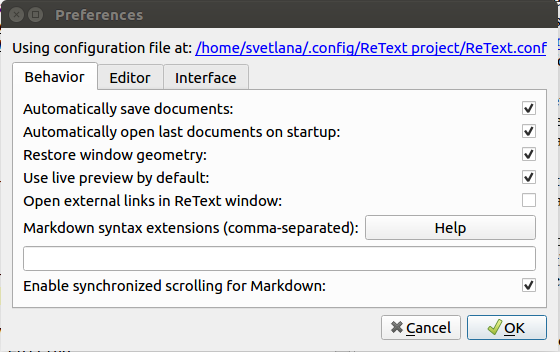
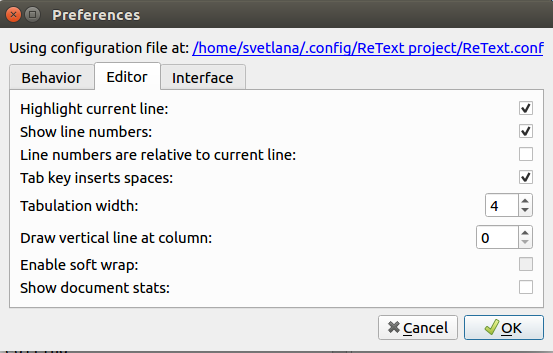
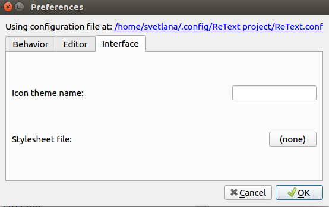
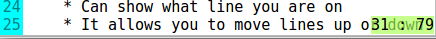
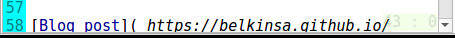
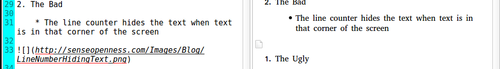

ReText Review
Introduction
As I said in the last post, I found a great Markdown editor called ReText. I decided to write a review on the program, but for that, I wanted to show what preferences I have on. I'm not sure if those would effect the review.



The Review
Ratings
UX
I'm giving UX a 7.5/10. Reason number one is there is no find/find-replace button on the tool bar. The next reason is there is no way to customize the tool bar. The third reason is the line counter hides the text when text is in that corner of the screen

but it fades out when cursor is on it

Next is the symbols need to be defined; I don't really use symbols and some of those, such as & larr ; (without spaces); I don't know. I Last but not least, the images don't show up on the live previewer. I have to use Markdown Preview, a web-based tool to check the images.

Performance
I'm giving performance a 10/10 because it only uses less than 100 MiB of memory and I had no big issues with it yet.
Features
I'm giving features a 10/10 because as you can see:
-
It can export in HTML, ODT, and PDF
-
It can have multiple documents open in tabs
-
It can view other plaintext files
-
Fullscreen works in the latest version
-
Table editing/formating is much easier
-
It has auto-fill for numbered and un-numbered lists
-
It has a live previewer and a normal one
-
It can show where the white spaces are
-
It can show what line you are on
-
It allows you to move lines up or down with a click of a button or a keyboard shortcut
-
It can show what line number you are on
-
It can auto-save documents and auto-open last documents on start-up with window geometry from the last session
-
It allows reStructuredText editing with previewer along with the default Markdown editing
-
It has a spell-checker
-
It has a HTML code viewer of the document that is opened
-
It can show what directory the file is sitting in
-
It can insert certain symbols in text, for example: ←
-
It has other features that are cool
Conclusion
Overall, I'm giving ReText a 9/10 because the features and the performance wins out over the UX.